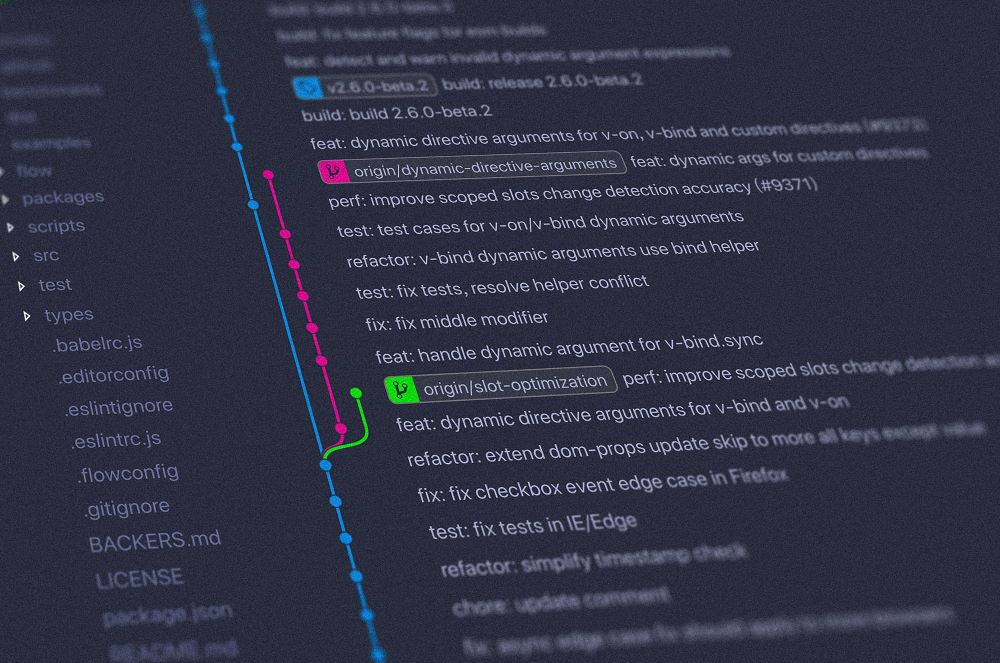

How to Create Iron Man’s Jarvis with Python
A customized virtual assistant inspired by Jarvis from Iron Man | View Code
"People worry that computers will get too smart and take over the world, but the real problem is that they’re too stupid and they’ve already taken over the world."
- Pedro Domingos
DIY Jarvis
In today's technology-driven world, the idea of having a personal virtual assistant, like Jarvis from the Iron Man movies, has become increasingly captivating. Inspired by the seamless interactions between Tony Stark and his AI companion, I have always wanted to have my own intelligent assistant to simplify daily life. This fascination inspired me to learn more about STEM and eventually led me on a journey to create my own customized virtual assistant using Python.
Imagine having an assistant that understands your voice commands, seamlessly performs tasks, and retrieves relevant information for you. By leveraging speech recognition and natural language processing, a personal assistant can interpret your requests and respond intuitively. From managing your schedule and sending emails to providing personalized recommendations, this digital companion can automate routine tasks and enhance your productivity.
As I explore my development process, I'll cover various capabilities and features of my virtual assistant, which I named Lila. By integrating with external services and APIs, it can fetch real-time updates, retrieve data, and even extend its functionalities to suit specific needs. Regardless of your programming background, this guide will provide you with the necessary tools and knowledge to bring your digital companion to life. To give you an idea, here are a few of the features I have already implemented for my personal use:
- Launch: Open an application on your computer
- Weather: Retrieve the weather information
- Google: Conduct a Google search
- Check email: Check for recent unread emails
- Check calendar: Access your Google Calendar
Voice Interface
To create an interactive voice interface, we can leverage the power of Python packages such as speech_recognition and pyttsx3. These packages enable us to seamlessly integrate speech recognition and synthesis capabilities into our virtual assistant.
With speech recognition, the assistant listens through the microphone, quietly analyzing the background for any spoken commands. It utilizes various open source transcription models to accurately transcribe what you say, allowing it to understand spoken words. Once the speech recognition model detects an activation word or phrase, the magic happens! The assistant intelligently parses the command, looking for specific keywords that help it understand your needs and intentions.
To get started, let's take a look at a code snippet that demonstrates how to record human speech and convert text into spoken words using the speech_recognition and pyttsx3 packages:
def mic_input():
"""
Takes input from the microphone and returns it as a string
:return: (string) input from the microphone, (boolean) False if failure
"""
try:
r = sr.Recognizer()
with sr.Microphone() as source:
print("Listening...")
r.energy_threshold = 4000
audio = r.listen(source, timeout=30, phrase_time_limit=20)
try:
print("Recognizing...")
command = r.recognize_google(audio, language='en-in').lower()
print(f"User said: {command}\n")
except Exception:
print("Say that again please...")
command = mic_input()
return command
except Exception as ex:
print(ex)
return False
def tts(text):
"""
Text to speech function
:param text: (string) text to be spoken
:return: (boolean) True if successful, False if failure
"""
try:
engine.say(text)
engine.runAndWait()
engine.setProperty('rate', 175)
return True
except Exception as ex:
print(ex)
return False
The mic_input() function is used to capture audio input from the microphone. It utilizes the SpeechRecognition library (sr) to listen to the microphone input for a specified duration and convert it to text while filtering out background noise. The function returns the recognized command as a string, and if there is a recognition failure, it prompts the user to repeat their command.
The tts function is responsible for converting text to speech using a text-to-speech engine in the say() method to speak aloud. The speech is then played using the runAndWait() method. If any error occurs during the text-to-speech conversion, the function returns False. With the basic code for interaction covered, let’s go over some of the specific features Lila has.
Gmail
In order to fulfill the user's request to send an email, the virtual assistant leverages the Gmail API. This API allows seamless integration with the user's Gmail account, enabling actions such as checking for unread emails and sending new ones. By utilizing a get_credentials() function, the virtual assistant ensures secure access to the user's Gmail account, obtaining and saving the necessary credentials for future use.
def check_unread():
"""Shows basic usage of the Gmail API.
Lists the user's Gmail labels.
"""
creds = get_credentials()
try:
# Call the Gmail API
service = build('gmail', 'v1', credentials=creds, cache_discovery=False)
# Define the search parameters for the email query
today = datetime.today() + timedelta(days=1)
one_day_ago = today - timedelta(days=3)
query = "is:unread after:{} before:{}".format(one_day_ago.strftime('%Y/%m/%d'), today.strftime('%Y/%m/%d'))
# Execute the email query
result = service.users().messages().list(userId='me', q=query).execute()
return process_query(result, service)
except HttpError as error:
print(f'An error occurred: {error}')
To handle the task of checking for unread emails, the check_unread() function queries the user's inbox to find unread messages within a specified time range, typically the last 24 hours. Once the query is executed, the results are processed by the process_query() function.
This function extracts relevant information from the retrieved email messages, such as the sender, subject, and received time. It decodes the message content and prepares a summary of the unread emails. This summary can include the sender's name, subject, and other details, depending on the level of detail requested.
By combining these functions, the virtual assistant can accurately report the number of unread emails in the last day and provide a summary of their key details. This functionality showcases the assistant's ability to interact with external services and handle email-related tasks, enhancing productivity and keeping the user informed about their inbox status.
Push Code to GitHub Automatically
Imagine you're working on a coding project and you want to easily push your code to a version control system like Git. That's where the virtual assistant comes in to help! With just a simple request, the assistant can help you push your code effortlessly.
def push_code(name, message=None, master=True):
try:
push_path = os.path.abspath(config.dir_dict[name])
except KeyError as ex:
print(ex)
return False
if not os.path.exists(push_path):
return False
if master:
master = "master"
else:
master = "main"
command = f"cd {push_path} && git pull origin {master} && git add ."
if message is None:
# add commit pull push with a default commit message
command += " && git commit -m 'pushing'"
else:
# add commit pull push with the passed-in commit message
command += f" && git commit -m '{message}'"
command += f" && git push origin {master}"
print("\n".join(command.split(" && ")))
subprocess.run(command, shell=True)
return True
When you ask the virtual assistant to push your code, the push_code function takes a few parameters, such as the name of the project and an optional commit message to perform your request. Depending on the value of the master parameter, the function sets the default branch to either "master" or "main". It then forms a command that navigates to the project directory, pulls the latest changes from the remote repository, stages all the modified files, and commits them with a commit message. If you didn't provide a commit message, the function adds a default message like "pushing" to keep things simple. However, if you did provide a message, it incorporates that into the commit. Finally, the function completes the process by pushing the committed changes to the remote repository.
The virtual assistant displays the commands it's executing, so you can stay informed about the actions being performed behind the scenes and add a layer of transparency. By utilizing this function, our virtual assistant makes it effortless for you to push your code and keep your project up to date with the latest changes. You can simply focus on your coding journey without worrying about the details of version control.
Check the Weather
Now let’s assume you're getting ready for the day, and you want to know what the weather has in store for you. With a simple request, the virtual assistant can fetch the current weather for any city you’d like.
def fetch_weather(city):
"""
Get the weather in the city
:param city: (string) city
:return: (string) weather
"""
api_key = config.weather_api_key
units_format = "&units=imperial"
weather_data = get_data(city, api_key, units_format)
if weather_data["cod"] == "404":
city = config.local_city
weather_data = get_data(city, api_key, units_format)
if weather_data["cod"] != "404":
main_data = weather_data["main"]
weather_description_data = weather_data["weather"][0]
weather_description = weather_description_data["description"]
current_temperature = main_data["temp"]
current_pressure = main_data["pressure"]
current_humidity = main_data["humidity"]
wind_data = weather_data["wind"]
wind_speed = wind_data["speed"]
final_response = f"""
The weather in {city} is currently {weather_description}
with a temperature of {current_temperature} degrees fahrenheit
"""
if not config.skip:
final_response += f"""
atmospheric pressure of {current_pressure} a m use,
humidity of {current_humidity} percent
and wind speed reaching {wind_speed} miles per hour"""
return final_response
return "Sorry Sir, I couldn't find the city in my database. Please try again"
def get_data(city, api_key, units_format):
base_url = "http://api.openweathermap.org/data/2.5/weather?q="
complete_url = base_url + city + "&appid=" + api_key + units_format
response = requests.get(complete_url)
weather_data = response.json()
return weather_data
When you ask the virtual assistant to check the weather, it taps into the fetch_weather function, which retrieves the weather information using an API and the name of the city as a parameter. Using the get_data function, the assistant sends a request to the OpenWeatherMap API, which responds with weather data as a JSON object.
Once the weather data is obtained, the function extracts the relevant information such as the weather description, current temperature, atmospheric pressure, humidity, and wind speed. These details are formatted into a final response string, providing you with a snapshot of the current weather conditions.
Full Feature List
That was just a few of the many helpful features a virtual assistant is capable of! In the future, I’d like to develop a natural language understanding deep learning model that will allow the user to speak more freely as they interact with the virtual assistant instead of relying on keywords. If you’d like to view the code for more of the functionality, you can browse the full list of commands and functionalities below or view the project on GitHub.
- Launch: Open an application on your computer
- Run: Execute another Python program
- Push: Upload code to version control software
- Switch window: Change the active window on your computer
- Lock computer: Lock the computer screen
- Screenshot: Capture a screenshot of the screen
- System info: Retrieve system information
- IP address: Display the IP address of the computer
- Close notes: Close an open note-taking application
- Note: Create a new note
- Image: Open the most recent screenshot taken
- Merge PDF: Combine two input PDF files
- Jupiter: Convert an IPYNB file to PDF
- Extract text: Extract all text from a PDF document
- Joke: Tell a joke
- XKCD: Open the most recent XKCD comic
- Piano: Play background music by The Piano Guys
- Date: Display the current date
- Time: Provide the current time
- Weather: Retrieve the weather information
- News: Search for news articles
- Go to: Open a specific URL in a web browser
- Tell me about: Perform a Wikipedia search
- Google: Conduct a Google search
- YouTube: Perform a YouTube search
- Calculate: Perform a Wolfram Alpha search
- Where is: Conduct a Google Maps search
- What is: Perform a Wolfram Alpha search
- What can you do: Provide a list of capabilities
- Development: Share upcoming capabilities
- Keyword: Display a list of keywords
- Silent mode: Switch to silent mode
- Voice mode: Switch to voice mode
- Earbud mode: Switch to earbud mode
- Press mode: Switch to press mode
- Terminal mode: Switch to terminal mode
- Power down: Turn off the virtual assistant
- Check email: Check for recent unread emails
- Send email: Send an email
- Check calendar: Access your Google Calendar
- Add event: Add an event to your Google Calendar
- To-do: Display your to-do list
- Start my day: Provide the weather and to-do list to start your day